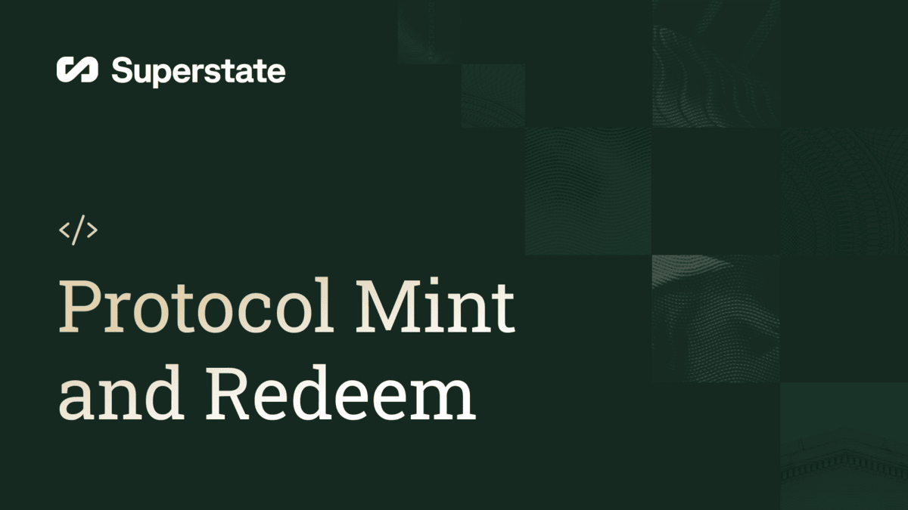
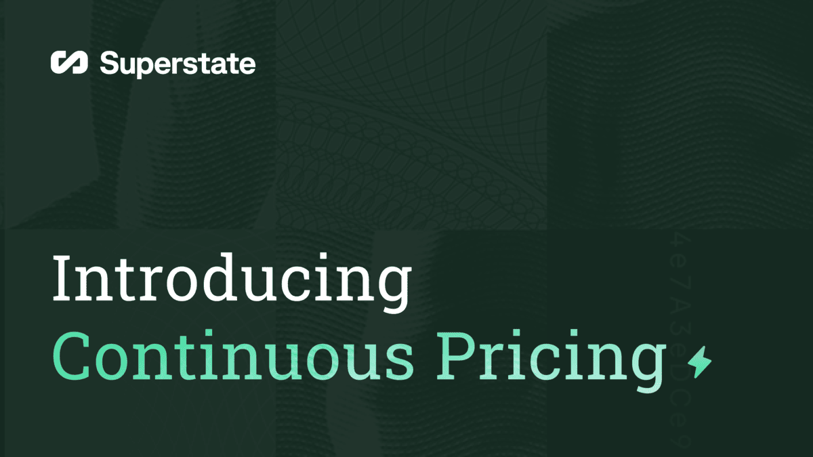
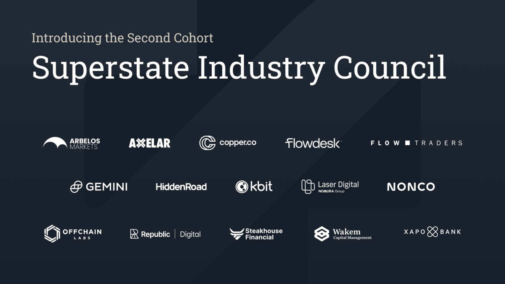
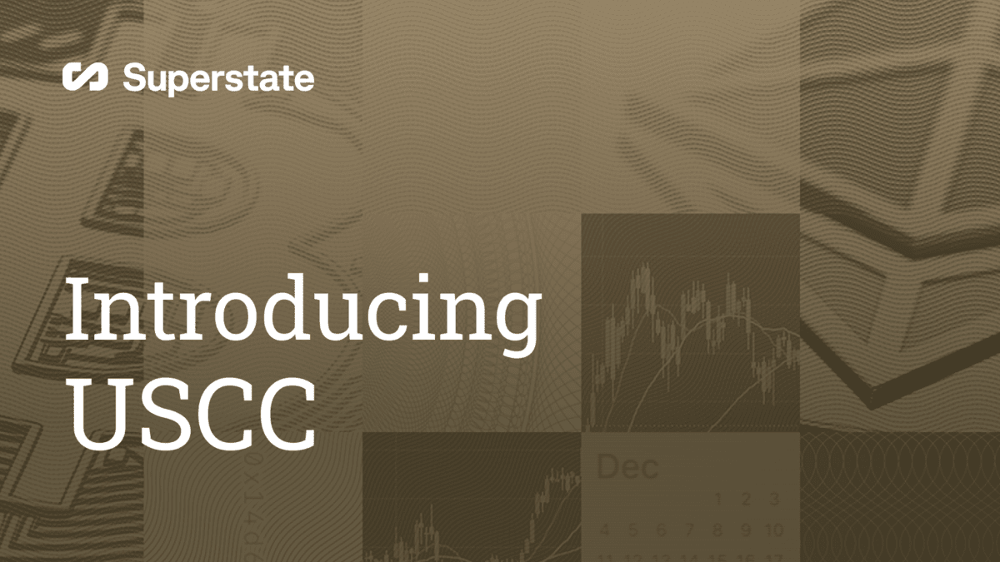
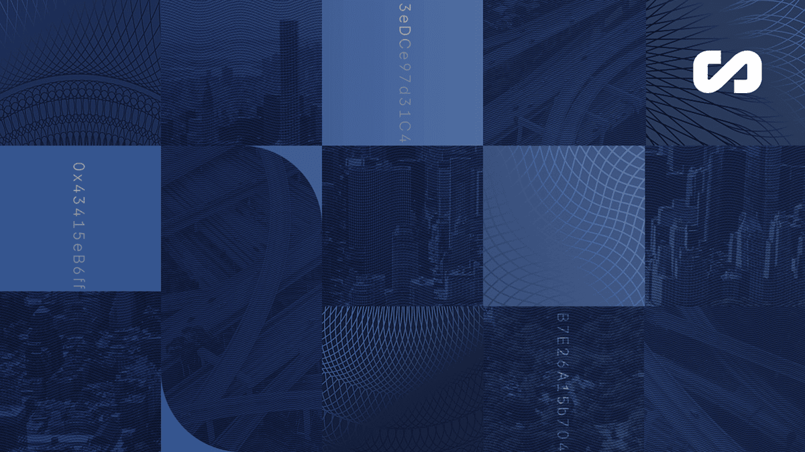
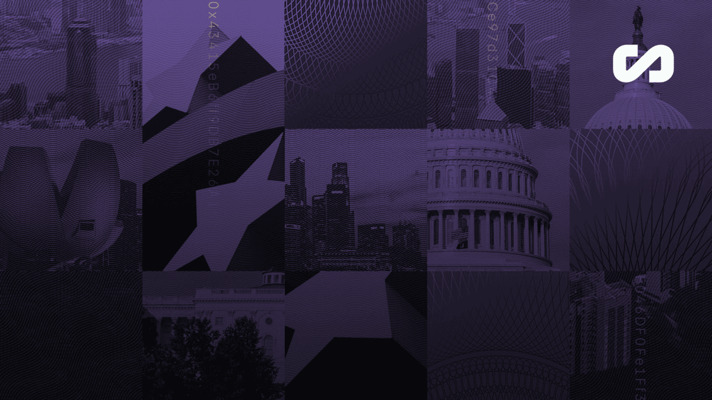
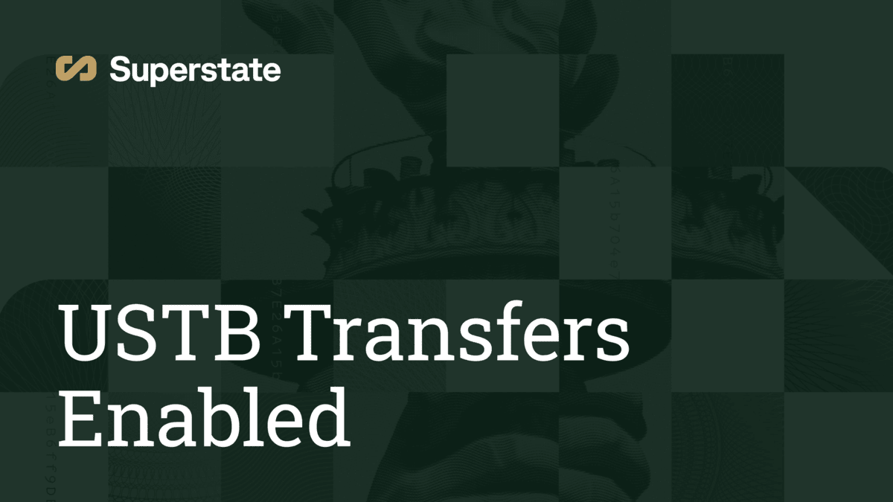
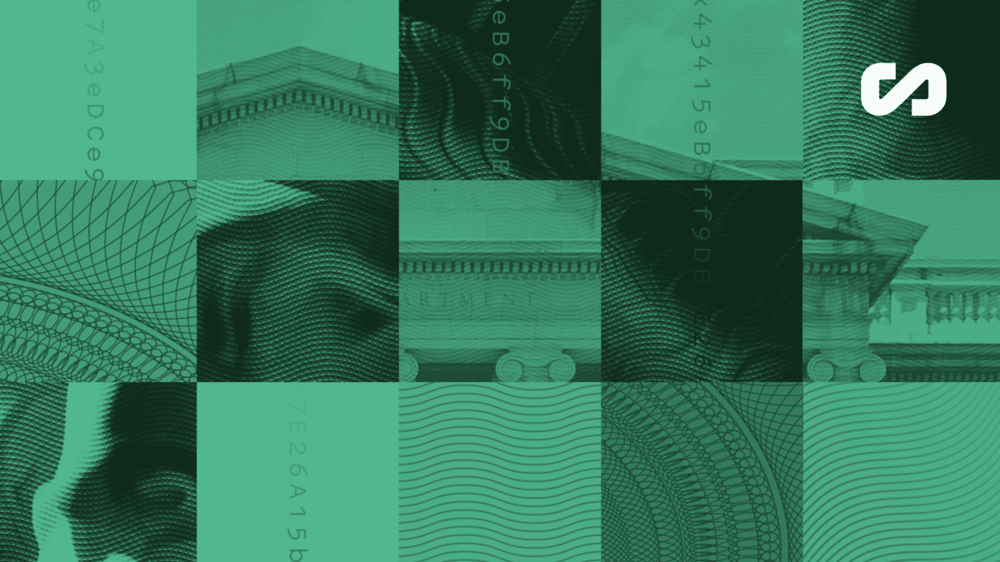
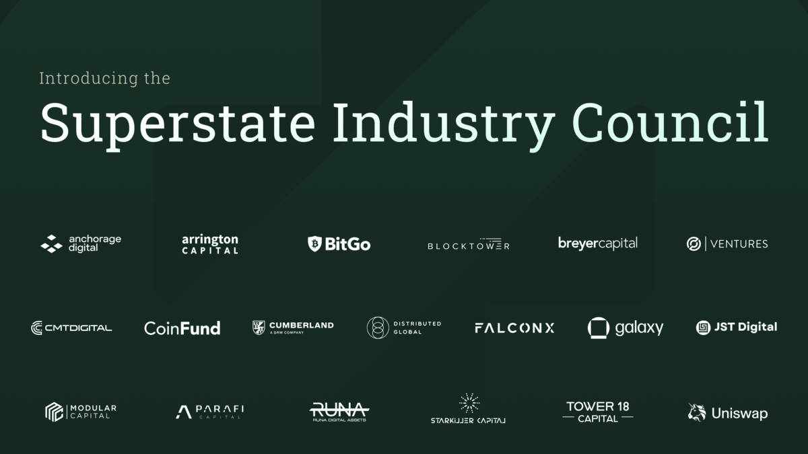
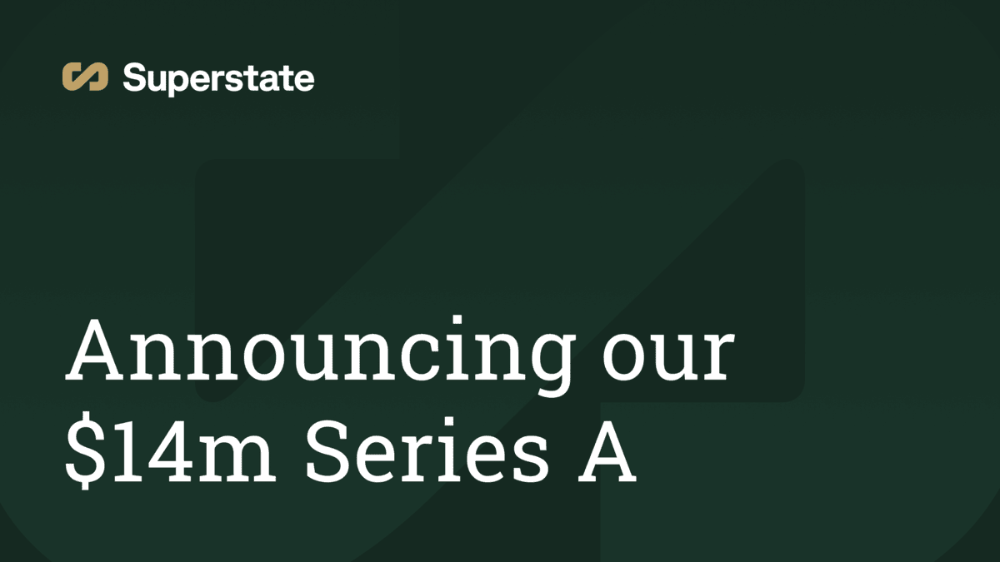

Blog
Announcements, product updates, and industry perspectives from the Superstate team
Superstate Launches Registered Transfer Agent
Superstate has registered Superstate Services LLC as an SEC-registered transfer agent, further advancing tokenized securities by integrating within the existing regulatory regime.
Top stories

Smart Contract Upgrade: Multichain & Bridging Features
SuperstateTokenV4 is live, bringing new multichain, bridging, and book-entry capabilities to Superstate investment products
Superstate Feb 27, 2025
The Year of Tokenization: Key Trends and Insights from 2024
2024 was a turning point for tokenization, marked by milestones, trends, and insights shaping the future of blockchain adoption and innovation.
Superstate Jan 22, 2025- 
Introducing Protocol Mint and Redeem for USTB
Protocol Mint and Redeem are composable functions on Ethereum, built for developers.
Superstate Dec 10, 2024 - 
Introducing Continuous Pricing, Offering 24/7/365 Fund Management
Superstate’s USTB fund now offers continuous pricing, providing 24/7/365 interest accrual and immediate NAV updates, setting a new standard for digital finance.
Superstate Oct 31, 2024 - 
Superstate Industry Council Welcomes Second Cohort of Leading Institutions
Superstate introduces the second cohort of Superstate Industry Council (SIC), a collective of top traditional and digital asset institutions committed to shaping Superstate’s product roadmap and advancing the adoption of tokenization within financial capital markets.
Superstate Aug 20, 2024 - 
Introducing the Superstate Crypto Carry Fund (USCC)
Superstate introduces USCC, a private, tokenized fund designed to provide institutional investors compliant and convenient exposure to the crypto basis trade.
Superstate Jul 22, 2024 - 
Mapping the Blockchains Driving Asset Tokenization
In Chapter 3 of the Book on Tokenization, we learn more about the blockchains where tokenization projects are developing their solutions.
Superstate Jun 26, 2024 
RWA Summit 2024: Tokenization Insights, Innovations, and Future Considerations Take Center Stage
The RWA Summit in Austin, TX was a pinnacle event showcasing industry leaders sharing their insights, experiences, and visions for the future of asset tokenization.
Superstate Jun 6, 2024- 
Mapping the Leading Jurisdictions for Tokenization of Assets Today
Exploring the jurisdictions driving global asset tokenization and the key factors enabling adoption.
Superstate May 21, 2024 - 
USTB now Enabled for Peer-to-Peer Transfers
Superstate has enabled the USTB token contract to allow for onchain, peer-to-peer transfers of USTB.
Superstate May 14, 2024 - 
How Tokenization Upgrades the Utility of $650T in Traditional Assets
Superstate looks at what assets can be tokenized and the advantages of blockchain tokenization of real-world assets.
Ray Buckton, RWA.World Apr 17, 2024 - 
Introducing the Superstate Industry Council (SIC)
Superstate introduces the Superstate Industry Council (SIC), a collective of top traditional and digital asset investment institutions committed to shaping Superstate’s product roadmap and advancing the adoption of tokenization within traditional financial services and capital markets.
Superstate Mar 6, 2024 Introducing the Superstate Short Duration U.S. Government Securities Fund (USTB)
Superstate reveals its first tokenized fund, Superstate Short Duration U.S. Government Securities Fund (USTB).
Superstate Feb 1, 2024- 
Superstate Announces $14m Series A Financing to Develop Tokenized Funds
Superstate has secured $14 million in Series A financing to develop regulated tokenized funds, bridging traditional finance with blockchain technology.
Superstate Nov 15, 2023